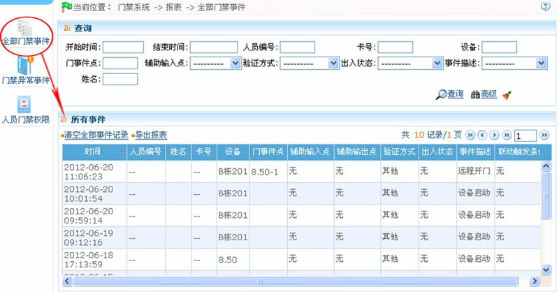
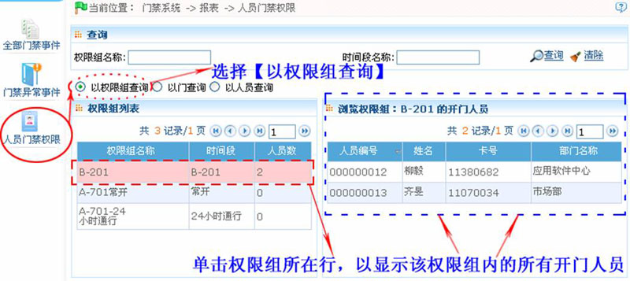

6.7 门禁报表
包括【全部门禁事件】、【门禁异常事件】、【人员门禁权限】报表。可以选择全部导出或查询后导出。
用户可以根据报表统计相关设备数据，包括卡验证信息、门操作信息、正常刷卡信息等。
关于正常事件和异常事件（含报警事件），请参见6.6 实时监控中的“实时事件描述”。
验证方式：仅卡、仅指纹、仅密码、卡加密码、卡加指纹、卡或指纹等。
 注意：只有在用户使用紧急状态密码开门时产生的事件记录，才会包含【仅密码】的验证方式。
注意：只有在用户使用紧急状态密码开门时产生的事件记录，才会包含【仅密码】的验证方式。
-
 全部门禁事件
全部门禁事件
因为门禁事件记录数据量较大，可以按指定条件查看门禁事件，指定条件通过查询功能实现。系统默认显示全部门禁事件报表：

清空全部事件记录：
点击【清空全部事件记录】，弹出提示选项，点击【确定】则完成记录清空。
-
门禁异常事件
单击【门禁】 【报表】
【报表】 【门禁异常事件】，进入门禁异常事件查看页面。
【门禁异常事件】，进入门禁异常事件查看页面。
清空门禁异常事件记录：清空全部门禁异常事件列表。
-
人员门禁权限
可以通过权限组、门、人员来查看相关权限。选择查询的方式，在左侧数据列表中选择相应的数据，右侧数据列表会显示相关数据。
例如：选择“以权限组查询”时左侧数据列表列出系统中的所有权限组列表，选择其中的权限组，右侧数据列表将查询出权限组中的所有人员。
具体操作方法如下：
